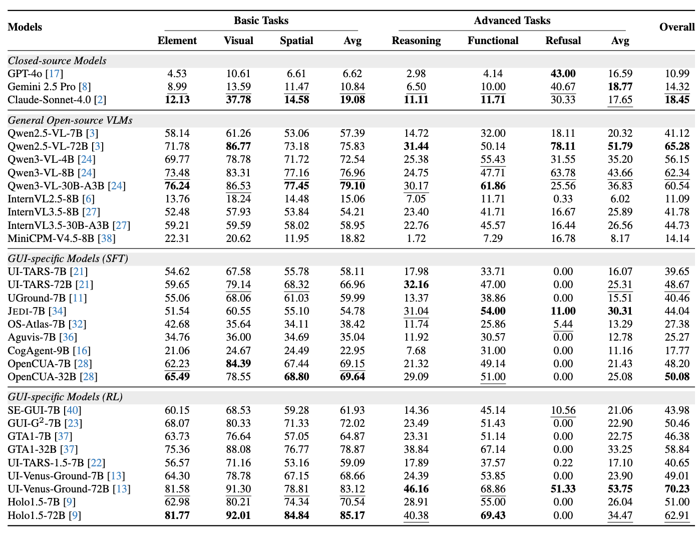

VenusBench-GD: A Comprehensive Multi-Platform GUI Benchmark for Diverse Grounding Tasks

Abstract
GUI grounding is a critical component in building capable GUI agents. However, existing grounding benchmarks suffer from significant limitations: they either provide insufficient data volume and narrow domain coverage, or focus excessively on a single platform and require highly specialized domain knowledge. In this work, we present VenusBench-GD, a comprehensive, bilingual benchmark for GUI grounding that spans multiple platforms, enabling hierarchical evaluation for real-word applications. VenusBench-GD contributes as follows: (i) we introduce a large-scale, cross-platform benchmark with extensive coverage of applications, diverse UI elements, and rich annotated data, (ii) we establish a high-quality data construction pipeline for grounding tasks, achieving higher annotation accuracy than existing benchmarks, and (iii) we extend the scope of element grounding by proposing a hierarchical task taxonomy that divides grounding into basic and advanced categories, encompassing six distinct subtasks designed to evaluate models from complementary perspectives. Our experimental findings reveal critical insights: general-purpose multimodal models now match or even surpass specialized GUI models on basic grounding tasks. In contrast, advanced tasks, still favor GUI-specialized models, though they exhibit significant overfitting and poor robustness. These results underscore the necessity of comprehensive, multi-tiered evaluation frameworks.
Performance Comparison
The performance of representative models on advanced grounding tasks are significantly lower than on basic tasks, highlighting the increased difficulty and reasoning demands.
Humane Performance vs. state-of-the-art (SOTA) on grounding tasks. A significant performance gap persists, particularly in advanced grounding scenarios.
Experimental Results
Performance comparison on VenusBench-GD dataset categorized by the evaluation tasks.
BibTeX
@misc{zhou2025venusbenchgdcomprehensivemultiplatformgui,
title={VenusBench-GD: A Comprehensive Multi-Platform GUI Benchmark for Diverse Grounding Tasks},
author={Beitong Zhou and Zhexiao Huang and Yuan Guo and Zhangxuan Gu and Tianyu Xia and Zichen Luo and Fei Tang and Dehan Kong and Yanyi Shang and Suling Ou and Zhenlin Guo and Changhua Meng and Shuheng Shen},
year={2025},
eprint={2512.16501},
archivePrefix={arXiv},
primaryClass={cs.CV},
url={https://arxiv.org/abs/2512.16501},
}